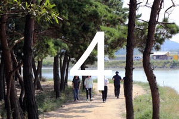
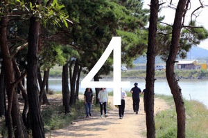

| 주소 | 안산시 상록구 일동 555번지 |
|---|---|
| 전화 | 031- 481-3059 (관광과) |
| 홈페이지 | http://tour.iansan.net/ |
| 지정번호 | 경기도 문화재자료 제94호 |
| 지정일 | 2000. 4 |
실학의 대가 성호(星湖) 이익(李翼) 선생이 평생을 거주하며 학문의 커다란 업적을 남긴 첨성총(지금의 일동)에 위치해 있습니다.
그의 묘소는 수원.인천간 산업도로가 바라보이는 구릉상에 위치하고 있는데 묘소의 석물로는 묘비(墓碑)와 상석(床石), 향로석(香爐石), 망주석(望柱石)이 있습니다. 봉분의 규모는 600×550×220cm입니다.
묘비의 재질은 오석(烏石)이며 전면에는 "星湖先生李公諱瀷之墓 贈 貞夫人 高靈申氏左 贈 貞夫人 酒川睦氏右"라 새겨져 있습니다.
이 비석은 공이 사후 204년이 되는 1967년에 건립되었으며 규모는 옥개석이 90×60×50cm 이고 비신은 146×57×26cm,기대석은 100×62×20cm 입니다. 상석(床石)의 재질은 화강암으로 규모는 121×83 ×58cm이며 향로석은 39×28×39cm입니다. 망주석의 높이는 165cm입니다.
두향(頭向)은 북향으로 남쪽을 바라 보고 있습니다. 묘소로 오르는 길은 계단이 설치되어 있으며 무덤 앞에 안내판이있습니다. 묘소 우측에는 사당이 있습니다.

| 시내버스 | 71, 71-2, 76, 99-1, 125번 |
|---|---|
| 좌석버스 | 301번 |
| 승용차 | 일동 중앙병원입구 사거리에서 부곡 동 방향으로 600m 지점에 위치 |
| 자료관리 | 관광과 | 전화 | 031-481-3059 | 최근수정일 | 2014-03-25 |
|---|---|---|---|---|---|
|
페이지의 내용이나 사용 편의성에 대해 만족하십니까?
|
|||||


 
